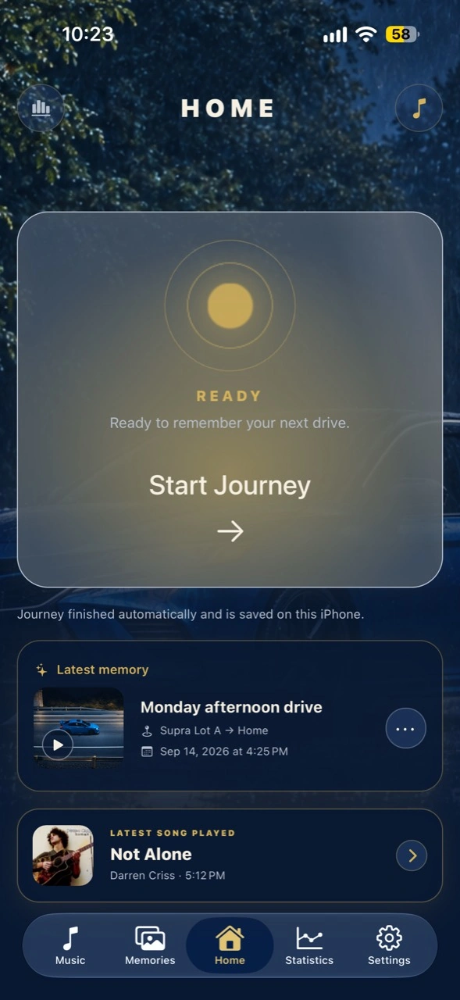

JourneyDeck V3
Duo Layout Lab
Visual prototype

3D preview is unavailable in this browser. The layout controls remain usable.
Review guide
What this prototype can reveal
Use the device as a visual stress test for pane balance, hinge clearance, navigation position, and whether a screen still reads well as the fold changes.
Visual approximation only. This does not emulate iOS, run JourneyDeck code, or replace testing on Apple’s eventual iPhone Duo simulator or hardware.